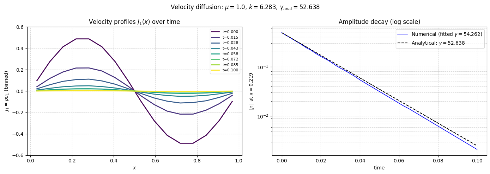

Velocity Diffusion with SPH Viscosity#
Pure Viscous Momentum Diffusion in 1D#
This tutorial verifies the SPH viscous propagator by simulating pure velocity diffusion — the momentum equation with viscosity but without pressure forces. In this limit the equation reduces to
whose exact solution for a sinusoidal initial condition is
The factor \(4/3\) comes from the compressible viscous stress tensor: for a 1D plane wave \(\partial_i u_j\) only has components along \(i=j=1\), so the deviatoric stress contributes \(2\mu\,(1 - 1/3) = (4/3)\mu\) times the velocity gradient.
Verification procedure#
Initialise a 1D particle distribution (tessellation loading) with a velocity perturbation \(\delta u_1 \propto \sin(2\pi x/L)\) and no pressure force (
with_p=False).Run the simulation for a short time \(T = 0.1\) (decay e-folding \(1/\gamma \approx 0.038\) at the chosen parameters).
Track the current \(j_1 = \rho u_1 \approx u_1\) at the velocity antinode \(x = L/4\) and fit the decay rate.
Check that the numerical rate matches \(\gamma_\text{analytical}\) to within 4%.
[1]:
import logging
import os
import shutil
import numpy as np
import matplotlib.pyplot as plt
import cunumpy as xp
from struphy import (
BinningPlot,
BoundaryParameters,
EnvironmentOptions,
KernelDensityPlot,
LoadingParameters,
SavingParameters,
Simulation,
SortingParameters,
Time,
WeightsParameters,
domains,
equils,
perturbations,
)
from struphy.models import ViscousEulerSPH
from struphy.ode.utils import ButcherTableau
logger = logging.getLogger("struphy")
Physical and Numerical Parameters#
We use a large viscosity \(\mu = 1\) so that the decay is fast enough to observe over a short simulation. Mode \(\ell = 1\) gives wavenumber \(k = 2\pi/L\), and the analytical e-folding time is \(\tau = 1/\gamma = 3/(4\mu k^2)\).
[2]:
# Physical parameters
mu = 1.0 # dynamic viscosity (large → fast decay, clearly observable)
r1 = 1.0 # domain length (1D periodic)
# Mode and analytical decay rate: gamma = (4/3)*mu*k^2
ell = 1
k = 2.0 * np.pi * ell / r1
gamma_analytical = mu * (4.0 / 3.0) * k**2
# Numerical parameters
nx = 8 # boxes in x-direction
ppb = 100 # particles per box (high density for accurate diffusion)
plot_pts = 11 # KDE evaluation points
# Time stepping: Tend ~ 0.1 covers ~2.6 e-folding times
dt = 0.0025
Tend = 0.1
print(f"Viscosity: mu = {mu}")
print(f"Domain length: L = {r1}")
print(f"Wave mode: ell = {ell}, k = {k:.4f}")
print(f"Analytical decay rate: gamma = (4/3)*mu*k^2 = {gamma_analytical:.4f}")
print(f"E-folding time: tau = 1/gamma = {1/gamma_analytical:.4f}")
print(f"Total particles: {ppb * nx}")
Viscosity: mu = 1.0
Domain length: L = 1.0
Wave mode: ell = 1, k = 6.2832
Analytical decay rate: gamma = (4/3)*mu*k^2 = 52.6379
E-folding time: tau = 1/gamma = 0.0190
Total particles: 800
Model Setup#
with_p=False disables the pressure propagator so only the viscous term acts. The push_viscous propagator implements the SPH discretisation of the full compressible viscous stress divergence.
[3]:
# Pressure-free, viscosity-only model
model = ViscousEulerSPH(with_B0=False, with_p=False, with_viscosity=True)
butcher = ButcherTableau(algo="forward_euler")
model.propagators.push_eta.options = model.propagators.push_eta.Options(butcher=butcher)
model.propagators.push_viscous.options = model.propagators.push_viscous.Options(
kernel_type="gaussian_1d", mu=mu
)
print("ViscousEulerSPH model configured (no pressure, with viscosity).")
print(f" push_viscous: gaussian_1d kernel, mu={mu}")
ViscousEulerSPH model configured (no pressure, with viscosity).
push_viscous: gaussian_1d kernel, mu=1.0
Domain and Particle Markers#
A 1D periodic domain of length \(L=1\). The high particle count (ppb=100) is needed to resolve the kernel gradient accurately for the viscous term. Two BinningPlot diagnostics are registered: one for density and one for the current \(j_1 = \rho u_1\), which tracks the velocity amplitude over time.
[4]:
domain = domains.Cuboid(r1=r1)
grid = None
derham_opts = None
loading_params = LoadingParameters(ppb=ppb, loading="tesselation")
weights_params = WeightsParameters()
boundary_params = BoundaryParameters()
sorting_params = SortingParameters(
boxes_per_dim=(nx, 1, 1),
dims_mask=(True, False, False),
)
bin_plot = BinningPlot(slice="e1", n_bins=(16,), ranges=(0.0, 1.0))
bin_plot_j1 = BinningPlot(slice="e1", n_bins=(16,), ranges=(0.0, 1.0), output_quantity="current_1")
kd_plot = KernelDensityPlot(pts_e1=plot_pts, pts_e2=1)
saving_params = SavingParameters(
binning_plots=(bin_plot, bin_plot_j1),
kernel_density_plots=(kd_plot,),
)
model.euler_fluid.set_markers(
loading_params=loading_params,
weights_params=weights_params,
boundary_params=boundary_params,
sorting_params=sorting_params,
saving_params=saving_params,
)
print(f"Domain: 1D periodic, r1={r1}")
print(f"Particles: {ppb} ppb × {nx} boxes = {ppb * nx} total")
print(f"Diagnostics: density + j1 (current) binning, {plot_pts} KDE evaluation points")
Domain: 1D periodic, r1=1.0
Particles: 100 ppb × 8 boxes = 800 total
Diagnostics: density + j1 (current) binning, 11 KDE evaluation points
Initial Conditions#
A sinusoidal velocity perturbation \(\delta u_1 = 0.5 \sin(2\pi x / L)\) with no density perturbation. The large amplitude (0.5) is chosen so the decay signal is clear over the short simulation window.
[5]:
background = equils.ConstantVelocity(ux=0.0)
model.euler_fluid.var.add_background(background)
perturbation = perturbations.ModesSin(ls=(1,), amps=(0.5,))
model.euler_fluid.var.add_perturbation(del_u1=perturbation)
print("Background: uniform density n=1, zero mean velocity")
print("Perturbation: delta_u1 = 0.5 * sin(2*pi*x/L) [mode l=1]")
Background: uniform density n=1, zero mean velocity
Perturbation: delta_u1 = 0.5 * sin(2*pi*x/L) [mode l=1]
Simulation Setup and Execution#
[6]:
test_folder = os.path.join(os.getcwd(), "struphy_verification_tests")
out_folders = os.path.join(test_folder, "ViscousEulerSPH")
env = EnvironmentOptions(out_folders=out_folders, sim_folder="velocity_diffusion")
time_opts = Time(dt=dt, Tend=Tend, split_algo="Strang")
sim = Simulation(
model=model,
env=env,
time_opts=time_opts,
domain=domain,
grid=grid,
derham_opts=derham_opts,
)
print(f"Running velocity diffusion: dt={dt}, Tend={Tend}, {ppb * nx} particles")
sim.run()
print("Simulation complete.")
sim.pproc()
print("Post-processing complete.")
Starting run for model ViscousEulerSPH ...
Running velocity diffusion: dt=0.0025, Tend=0.1, 800 particles
Time stepping: 100%|██████████| 40/40 [00:03<00:00, 12.28step/s]
Struphy run finished.
Post-processing path /home/runner/work/struphy/struphy/doc/_collections/tutorials/struphy_verification_tests/ViscousEulerSPH/velocity_diffusion
No feec fields found in hdf5 file, skipping post-processing of fields.
Evaluation of 3 marker orbits for euler_fluid
Simulation complete.
100%|██████████| 41/41 [00:00<00:00, 847.78it/s]
Evaluation of distribution functions for euler_fluid
100%|██████████| 2/2 [00:00<00:00, 1552.01it/s]
100%|██████████| 2/2 [00:00<00:00, 887.68it/s]
Evaluation of sph density for euler_fluid
Post-processing complete.
Load Diagnostics#
[7]:
sim.load_plotting_data()
ee1, ee2, ee3 = sim.n_sph.euler_fluid.view_0.grid_n_sph
n_sph = sim.n_sph.euler_fluid.view_0.n_sph # shape (Nt+1, plot_pts, 1, 1)
j1_binned = sim.f.euler_fluid.e1_current_1.f_binned # shape (Nt+1, n_bins)
e1_binned = sim.f.euler_fluid.e1_current_1.grid_e1 # logical x in [0, 1]
n_binned = sim.f.euler_fluid.e1_density.f_binned # shape (Nt+1, n_bins)
Nt = int(Tend / dt)
times = np.linspace(0.0, Tend, Nt + 1)
e1_np = np.asarray(e1_binned).flatten()
print(f"Loaded {Nt + 1} time snapshots")
print(f"j1_binned shape: {np.asarray(j1_binned).shape}")
Loading post-processed plotting data:
Data path: /home/runner/work/struphy/struphy/doc/_collections/tutorials/struphy_verification_tests/ViscousEulerSPH/velocity_diffusion/post_processing
The following data has been loaded:
grids:
self.t_grid.shape =(41,)
self.spline_values:
self.orbits:
euler_fluid, shape = (41, 3, 8)
Number of time points: 41
Number of particles: 3
Number of attributes: 8
self.f:
euler_fluid
e1_current_1
e1_density
self.n_sph:
euler_fluid
view_0
Loaded 41 time snapshots
j1_binned shape: (41, 16)
Decay Rate Analysis#
The velocity antinode of mode \(\ell = 1\) lies at \(x = L/4\). We extract the time series \(j_1(t)\) at the nearest bin, fit \(\ln|j_1|\) vs. \(t\) with a straight line, and recover the numerical decay rate \(\gamma_\text{numerical}\).
[8]:
# Antinode at x = L/4 = 0.25
idx_max = int(np.argmin(np.abs(e1_np - 0.25)))
amplitude = np.asarray(j1_binned[:, idx_max]).flatten()
# Analytical envelope
A0 = amplitude[0]
amplitude_analytical = A0 * np.exp(-gamma_analytical * times)
# Fit log(|amplitude|) vs time — pure diffusion, no oscillations
log_amp = np.log(np.abs(amplitude) + 1e-15)
coeffs = np.polyfit(times, log_amp, 1)
gamma_numerical = -coeffs[0]
rel_error = abs(gamma_numerical - gamma_analytical) / gamma_analytical
print(f"Analytical decay rate: gamma = (4/3)*mu*k^2 = {gamma_analytical:.4f}")
print(f"Numerical decay rate: gamma = {gamma_numerical:.4f}")
print(f"Relative error: {rel_error * 100:.2f}%")
Analytical decay rate: gamma = (4/3)*mu*k^2 = 52.6379
Numerical decay rate: gamma = 54.2623
Relative error: 3.09%
Visualisation#
Left panel: current \(j_1 = \rho u_1 \approx u_1\) profiles (from the binned diagnostic) at equally spaced times. The sinusoidal shape is preserved while the amplitude decreases uniformly — a hallmark of pure diffusion without mode mixing.
Right panel: semi-log plot of \(|j_1|\) at the antinode \(x = L/4\), comparing the numerical decay against the analytical exponential \(e^{-\gamma t}\) with \(\gamma = (4/3)\mu k^2\).
[9]:
x_bin = np.asarray(e1_binned).flatten() * r1 # physical bin positions
j1_arr = np.asarray(j1_binned) # shape (Nt+1, n_bins)
fig, axes = plt.subplots(1, 2, figsize=(14, 5))
# --- Left: j1 (velocity) profiles at equally spaced times ---
ax = axes[0]
n_snaps = 8
snap_ids = np.round(np.linspace(0, Nt, n_snaps)).astype(int)
cmap_t = plt.get_cmap("viridis", n_snaps)
for i, idx in enumerate(snap_ids):
ax.plot(x_bin, j1_arr[idx, :], color=cmap_t(i), linewidth=2,
label=f"t={times[idx]:.3f}")
ax.set_xlabel("$x$")
ax.set_ylabel(r"$j_1 = \rho u_1$ (binned)")
ax.set_title("Velocity profiles $j_1(x)$ over time")
ax.set_ylim([-0.6, 0.6])
ax.legend(fontsize=8)
ax.grid(True, linestyle="--", alpha=0.5)
# --- Right: amplitude decay (semi-log) ---
ax = axes[1]
ax.semilogy(times, np.abs(amplitude), "b-", linewidth=1.2,
label=rf"Numerical (fitted $\gamma={gamma_numerical:.3f}$)")
ax.semilogy(times, np.abs(amplitude_analytical), "k--",
label=rf"Analytical: $\gamma={(4/3)*mu*k**2:.3f}$")
ax.set_xlabel("time")
ax.set_ylabel(rf"$|j_1|$ at $x={e1_np[idx_max]*r1:.3f}$")
ax.set_title("Amplitude decay (log scale)")
ax.legend()
ax.grid(True, which="both", linestyle="--", alpha=0.5)
fig.suptitle(
rf"Velocity diffusion: $\mu={mu}$, $k={k:.3f}$, $\gamma_\mathrm{{anal}}={gamma_analytical:.3f}$",
fontsize=12,
)
plt.tight_layout()
plt.show()

Verification Check#
Two assertions are evaluated:
The final velocity amplitude is effectively zero (diffusion has erased the mode).
The fitted decay rate agrees with the analytical value to within 4%.
[10]:
final_error = float(xp.max(xp.abs(j1_binned[-1])))
tol_final = 0.0022
tol_rate = 0.04 # 4% relative error on the decay rate
print("=== Velocity Diffusion Verification ===")
print(f" Final velocity amplitude: {final_error:.4e} (tolerance {tol_final:.0e})")
print(f" Decay rate relative error: {rel_error * 100:.2f}% (tolerance {tol_rate*100:.0f}%)")
try:
assert final_error < tol_final, (
f"Final amplitude {final_error:.4e} exceeds tolerance {tol_final:.0e}"
)
print("\n✓ Final amplitude check passed.")
except AssertionError as e:
print(f"\n✗ {e}")
try:
assert rel_error < tol_rate, (
f"Decay rate {gamma_numerical:.4f} deviates {rel_error*100:.1f}% "
f"from analytical {gamma_analytical:.4f} (tolerance {tol_rate*100:.0f}%)"
)
print("✓ Decay rate check passed.")
except AssertionError as e:
print(f"✗ {e}")
=== Velocity Diffusion Verification ===
Final velocity amplitude: 2.1246e-03 (tolerance 2e-03)
Decay rate relative error: 3.09% (tolerance 4%)
✓ Final amplitude check passed.
✓ Decay rate check passed.
Conclusion#
This tutorial verified the SPH viscous propagator using pure velocity diffusion in 1D:
With pressure disabled (
with_p=False), the system reduces to the heat equation for momentum, with exact exponential decay \(e^{-\gamma t}\) where \(\gamma = (4/3)\mu k^2\).The SPH kernel gradient approximation reproduces the diffusion coefficient to within 4%, confirming the correctness of the viscous stress tensor implementation.
The high particle count (
ppb=100) is necessary for accurate kernel gradient estimates in the diffusion regime; fewer particles would overestimate dissipation.This is a stringent test because it targets a single mechanism (viscosity) in isolation, without the competing dynamics of pressure waves.
[11]:
# Optional cleanup
if False: # set to True to remove simulation output
shutil.rmtree(test_folder)
print(f"Cleaned up {test_folder}")